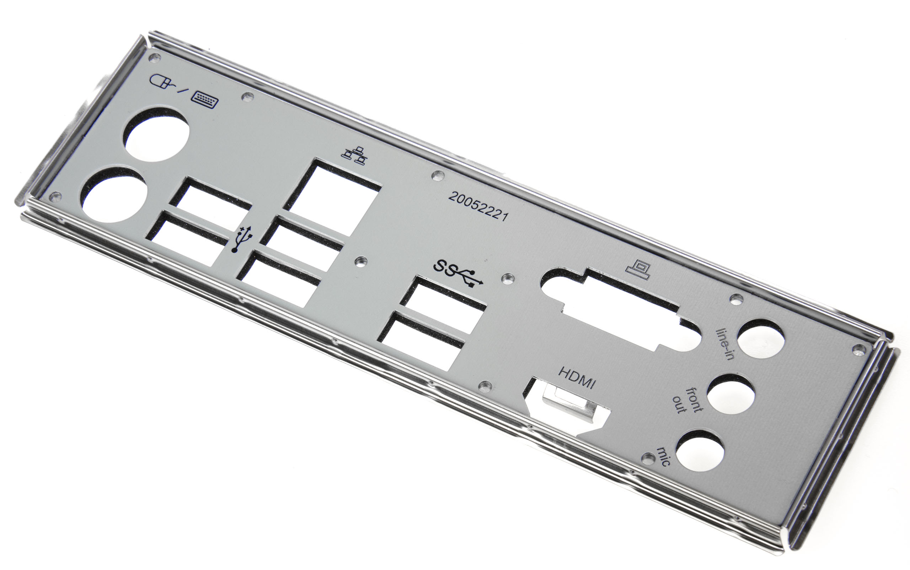
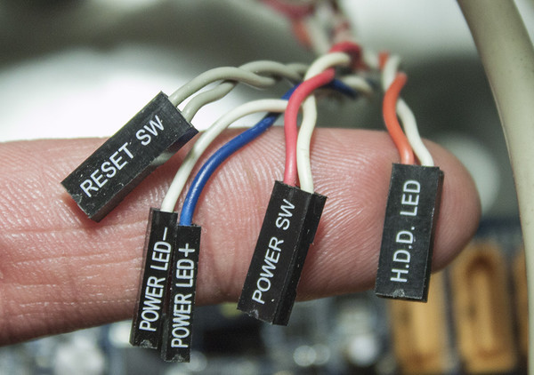

Если вы решили собрать компьютер самостоятельно, то вас вероятнее всего пугает этот процесс из-за того, что вы боитесь что-нибудь сломать или не знаете что и куда нужно подключать. На самом деле, не стоит волноваться. Сборка компьютера чуть сложнее сборки конструктора LEGO. Главное — соблюдать определённые правила, и никуда не торопиться. А в следующей статье вы узнаете, что делать после сборки, и как скачать Windows.
Для сборки ПК необходимо подготовить какую-либо ёмкость для sata проводов, винтиков, крестовую отвёртку, маленькая крестовая отвёртка (понадобиться для установки SSD M2), а также пластиковые стяжки для кабель-менеджмента. Также необходимо понимать, что если это ваша первая сборка, то на неё вы можете потратить весь день.
Распаковываем материнскую плату и ищем в центре платы сокет для процессора.
Затем, нам необходимо аккуратно раскрыть сокет. Для этого нужно аккуратно отогнуть металлическую планку. Далее берём свой процессор и установливаем его в сокет. Важно перед этим убедиться, в том, что вы установили процессор в соответствии с ключами. На углу материнской платы и на угле процессора есть маленький треугольник
Вы почувствуете, что процессор будто провалился в сокет и встал в пазы. Далее закрываем рычажок.
На оперативной памяти ищем ключ, в виде прорези. Также и на материнской плате есть ключ. Их нужно сопоставить и установить оперативную память, перед этим открыв слот оперативной памяти, отогнув специальные замки. Как только память встанет в слот вы услышите щелчок, а ключи закроются.
Если у вас 2 плашки оперативной памяти, то и нужно установить через одну. Это необходимо для активации двухканального режима, который поможет увеличить производительность вашего компьютера.
SSD M2 удобен тем, что к нему не требуется подключать какие-либо провода. Для того чтобы его подключить, находим нужный слот и аккуратно, без лишних усилий вставляем в слот. Когда мы установим его в разъём SSD приподнимется. Затем берём маленький винтик, который шёл в комплекте с материнской платой. Не сильно надавливая на SSD, опускаем его вниз и аккуратно закручиваем винтик.
Для начала нужно нанести термопасту на процессор. Для этого нам необходимо обработать процессор чем-нибудь на основе спирта, если на него уже наносилась термопаста до этого, затем нанести новую термопасту на процессор.(Как наносить термопасту можно посмотреть здесь). Но если у вас в компьютере в качестве системы охлаждения процессора используется кулер от Intel или от AMD, то на процессор наносить термопасту не потребуется т.к. термопаста уже нанесена на пластину кулера.
Для того, чтобы установить кулер необходимо посмотреть в инструкцию т. к. сейчас выпускается много различных по строению вертушек и общего алгоритма для установки не существует.
На этом этапе нам необходимо распаковать корпус для нашего ПК. А также необходимо установить дополнительные вентиляторы на вдув и выдув(для чего они нужны рассказано в зтой статье)
На этом этапе нам необходимо установить наш блок питания в корпус. В большинстве корпусов место под установку БП находится снизу. В таком случае устанавливаем БП вентилятором вниз и не забываем закрепить блок питания при помощи болтов, которые идут в комплекте с БП.
Перед тем, как установить материнскую плату в корпус нужно поставить заглушку, которая идёт в комплекте с материнской платой.
Для того, чтобы установить материнскую плату в корпус необходимо сначала приложить саму плату к стенке корпуса и посмотреть, где находятся отверстия конкретно под твою плату. Далее необходимо взять стандофы и закрутить их в необходимые отверстия. Важно учитывать то, что необходимо закрутить столько стандофов, сколько необходимо. Ни в коем случае нельзя закручивать лишние стандофы т.к. они могут касаться материнской платы и вызвать замыкание. И нельзя оставлять пустые места для крепления платы т.к. она будет "висеть", а это может привести к поломке, особенно если у вас тяжёлая материнская плата. Далее нужно взять материнскую плату и аккуратно прислоняешь к основанию корпуса, попадая всеми разъёмами к заглушке материнской платы. Далее аккуратно прикручиваем материнскую плату при помощи болтиков. После того как прикрутили материнскую плату к корпусу его можно стоя.
Для того, чтобы разместить Жёсткий диск в корпусе необходимо внизу корпуса открутить салазки, совместить отверстия на солазках и жёстком диске и закрутить винтики. Желательно закрутить винтики как можно плотнее, чтобы избежать ненужной вибрации. Далее салазки вставляем обратно в корпус. После этого нам необходимо его подключить к материнской плате. Для этого нам нужен sata-кабель.
Также необходимо найти кабель питания для жёсткого диска и подключить их в соответствующие разъёмы.
Затем нам необходимо подключить SATA-кабель к материнской плате. Для этого нам нужно протянуть его через отверстие по кратчайшему пути. В основном разъёмы SATA находятся сбоку материнской платы. При подключении произойдёт характерный щелчок
Это один из самых сложных этапов для новичков т.к. проводов от блока питания идёт очень много, и в них легко запутаться. Для начала мы подключим вентиляторы к материнской плате. Для этого мы должны на материнской плате найти разъём "CHA_FUN" и подключаем вентиляторы туда.
Следующим шагом мы подключаем кабель, который отвечает за звук и микрофон-"audio" и подключаем его в порт "HD-audio" на материнской плате. Стараемся при этом прокладывать все провода красиво, и не спутывать их.
Далее нужно подключить usb кабель. В большинстве плат порты usb находятся недалеко от порта "audio".
Дальше нам необходимо подключить переднюю панель к материнской плате. Проводки будут выглядеть вот так.
А порт будет выглядеть вот так.
Подключить все провода необходимо в последовательности, как показано ниже.
Дальше подключаем кабель "usb 3.0" в одноимённый порт, выглядит он вот так.
Далее на необходимо подключить самые главные кабели. Это кабели от процессора и материнской платы. Кабель для питания процессора очень легко найти т.к. на нём будет надпись "CPU" и выглядеть он будет вот так.
Его нужно будет протянуть по кратчайшему пути в верхний правый угол и вставить его в разъём.
Кабель для питания материнской платы (20 + 4 pin) выглядит вот так. Разъём для него будет находиться с правой стороны и очень сильно выделяется
Для того, чтобы установить видеокарту в материнскую плату необходимо на слоте "PCI-Express" открыть замочек справа от слота. Затем нужно приложить саму видеокарту к слоту и посмотреть какие заглушки мешают тебе в корпусе. Затем их нужно отломать или открутить. Далее мы берём в руки саму видеокарту и аккуратно устанавливаем её в слот с небольшим усилием. Когда видеокарта встанетви в слот, произойдёт характерный щелчок. Дальше видеокарту нужно будет зафиксировать при помощи при помощи болтиков. Для того чтобы запитать видеокарту нужно найти кабель "PCI-Express". При подключении вы услышите щелчок.
На этом этапе необходимо навести порядок на задней стенке корпуса. Для этого необходимо подтянуть все провода с лицевой стороны к задней и аккуратно стягиваешь провода с помощью пластиковых стяжек. Главная задача на этом этапе - сделать всё аккуратно и без особых проблем закрыть заднюю стенку. и закрываешь переднюю стенку.
На этом моменте вас уже можно поздравить т. к. вы смогли собственными руками собрать ПК. Дальше необходимо подключить все периферию и включить компьютер. А что делать дальше вы можете посмотреть по ссылке ниже.